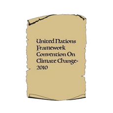
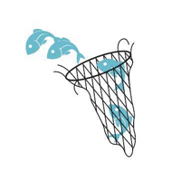
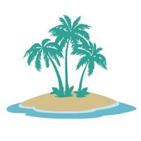
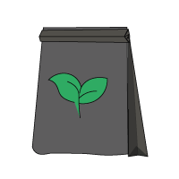
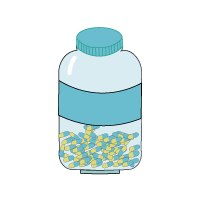

Seeding the Sea

As climate change and governance impact Belize's fishing economy, advocates view seaweed farming as the solution.
REPORTER
Veronica Correa
PHOTO/VIDEO
Caroline Almy
Sarah Redmond
Haley France
INTERACTIVE
Malin Curry
Lowell “Japs” Godfrey is the king of Little Water Caye.
The small island is 18 miles offshore from the Belizean village of Placencia, and mostly covered in shrubs. Only Godfrey, who boats out to the caye and stays for days or weeks at a time, and a few sea rangers, are here. He usually sleeps in a tent under the coconut trees he planted when he first came to the island several years ago.
“I can handle being alone. It’s not a problem,” he said. “Once you have a creative thought or a creative mind, you never get bored.”
Godfrey was born and raised in Placencia, and said fishing was always part of the village’s way of life. As a child, he caught his breakfast on the beach before school, and watched his parents fish. But he also was conscientious of the ecological impacts of fishing.
“We learn from our ancestors how to care for the environment,” he said. “I learned from people who were sustainable, environmentalists before the word was popular.”
Godfrey and his father also harvested wild seaweed growing up, but he said he realized the practice could be more sustainable by replenishing the ocean while developing an industry that could complement fishing. He makes sure to not just take seaweed from the farm, but to replant it with the pieces he finds on the beach.
Godfrey normally wakes up before sunrise. After brewing his favorite coffee, he takes a long stretch of nylon string and ties a series of knots he’ll use to collect seaweed later. Once the sun is up, he walks to the shore to grab any pieces of the yellow, branch-like plant that washed up.
When the waves settle, Godfrey can venture to his farm. The sea is a calming blue, an optimal condition for harvesting. Wearing a snorkel and wetsuit, he wades out with his net until the water reaches his waist. He sorts through the golden-yellow, spiny seaweed that’s started growing just beneath the water, using his knots to tie each head together and collect it into the net. Once he’s reached the shore, Godfrey leaves the wet strands to dry in the sun until the afternoon, when it turns white and rubbery.

Godfrey sifts through the seaweed he has collected from his farm to remove any debris that may have attached to it. He dries this seaweed on screen tables, and once it's fully dry he can take it back to Placencia to sell it. Photo by Caroline Almy.
After several days, he boats back to Placencia to sell the dried seaweed. One pound costs around $30 Belizean ($15 USD) in the village, according to The Nature Conservancy (TNC): the same price as a pound of lobster, and triple that of conch.
The economic impact of fishing in Belize goes beyond the couple of thousand fishers out of the country’s population of 375,000. It’s also deeply connected to the growing tourism economy, and fishing enthusiasts visit for recreational and sport fishing. But the industry has also dealt with declining fish populations and challenges with legal enforcement.
After a lucrative 10 years in commercial seaweed farming, Godfrey has become a poster child for his cause. A handful of other farms have popped up, with support from the government and nonprofits. Seaweed farming is strenuous, and it doesn’t guarantee profits. But its supporters believe it can provide a new opportunity not just for fishers, but for the country.
“The more fishermen we have doing this, the more I believe the reef will have a chance to recover from what we did,” Godfrey said.

Godfrey checks on his seaweed farm. As he goes down each row of rope, he attaches seaweed to knots he tied himself. Once the seaweed is attached to a knot, it can grow large enough to be harvested and dried. Photo by Sarah Redmond.
“What sent me to school was fishing”
Godfrey’s transition into seaweed farming represents a small shift alongside greater policy and demographic changes in the fishing industry. His family on his mother’s side has been in Placencia for four generations, almost since the village was officially founded in the late 1800s. Placencia was historically a commercial fishing community, but the village dynamics shifted after Hurricane Iris came through in 2001. Foreign developers swooped in, leading to rapid real estate growth and a transition to a tourism economy.
Despite this economic shift, the number of fishers has increased in the last 10 years. The fishing industry also financially supports an additional 15,000 Belizeans who either depend on a relative’s income or who work in related industries like tourism. Commercial, sport and subsistence fishing are all still integral to the Placencia community.
“What sent me to school was fishing,” said Ilsa Villanueva, the village chair in Placencia and Godfrey’s cousin. “My father was a fisherman.”
Villanueva said, like many others in Placencia, her father eventually transitioned into tourism so he could pay for the rest of her secondary education. She also said climate change has made commercial fishing more difficult. Due to rising ocean temperatures, commercial fish species like conch and lobster have migrated farther from the shore. Celia Mahung, director of the Toledo Institute for Development and Environment (TIDE), added that changing weather patterns —more rain, hotter days and stronger waves — make it harder to go out to sea.
The Belizean government has attempted to respond to these environmental changes. It’s also had to crack down on illegal fishing, as unlicensed fishers from neighboring countries will visit at night. The Managed Access Program, which was implemented in 2016, divided the country’s coast into nine zones and allowed fishers to get a license for two areas of their choice. The purpose of Managed Access is to limit the ecological strain on certain parts of the sea, and to improve legal enforcement.
Managed Access has received praise from environmental groups for prioritizing sustainability while allowing fishers to continue the practice. But Placencia fisherman Gareth Longsworth, who is Godfrey’s first cousin, said the program has harmed fishers’ incomes. He said too many people are trying to fish in one area, so individual catches are declining. The rules are also not properly enforced, so illegal activities continue with few consequences.
“It makes it hard for guys like me,” he said.
Although environmental nonprofits like SEA continue to invest in fishing policy reform, they’re also supporting what they call “alternative” projects like seaweed farming. Longsworth is also a member of the Placencia Producers Cooperative, a fishing coalition that Godfrey leads. Under Godfrey’s vision, some cooperative members like Longsworth have started to farm seaweed in addition to fishing. But in an industry-wide time of economic uncertainty, not everyone can afford to wait for success.
The Path to Progress

Since the country’s conception, Belizean citizens and government officials have worked to preserve their environment from changing temperatures and development. From lobbying to on-the-ground activism, Belize is committed to alleviating the effects of climate change.
-
Belize gains its independence from Great Britain and soon after passes the National Park System Act and Wildlife Protection Act
1981
-
Belize establishes the National Sustainable Development Council
1999
-

The government of Belize hosts the first United Nations Framework Convention on Climate Change
2010
-

Managed Access fishing initiative seeking to prevent overfishing in Belizean seas is piloted
2011
-

The San Pedro Council assesses beach erosion in Belize and develops a plan for reclamation
2016
-
Deadline for 10 sustainable development goals defined by Belize government
2030
“It’s become a business instead of hearing the truth”
Seaweed farming has generally earned good press from environmental groups. In addition to programs like Managed Access, which directly relate to fishing, seaweed farming is seen as another strategy to restore fish populations and minimize pressure on the ocean.
According to a report from TNC, market demand for seaweed is growing, and it’s a viable source of income. TNC has collaborated with the Belize Trade and Investment Development Service (BELTRAIDE), a national government agency, to develop seaweed farms. The farms are currently based near Placencia and the island of Turneffe Atoll, off the coast near Belize City.
Seleem Chan, TNC’s seaweed mariculture project coordinator, said Placencia has two main seaweed farm operations: Godfrey’s farm on Little Water Caye and the Belize Women’s Seaweed Farmers Association’s seed bank at Hatchet Caye. The women’s association, which officially launched in the summer of 2019, aims to develop economic opportunities for women through both farm training and support for market products like seaweed soaps.
Amed Figueroa, export business adviser for BELTRAIDE, said seaweed farming in Belize is still geographically limited to Placencia and Turneffe Atoll. Figueroa also said the industry would ideally grow so that Belize can export its own seaweed, ultimately becoming a more significant sector of the economy.
Mahung said TIDE started a seaweed farm project with a few fishers in Toledo province, south of Placencia. However, the initiative was discontinued. The farms are the most successful in clear waters, which Mahung said are hard to find in Toledo. She added that the fishers became discouraged as others came to the farm to steal the mature seaweed.
Longsworth started his own seaweed farm in September, about 15 miles from Placencia, but has yet to make a single sale. He said while the groups who fund seaweed farming have good intentions, the process is largely unsuccessful because the grants only assist with initial costs and don’t set farmers up for long-term success.
Farming is also a slow process: Longsworth said it takes three to four months until the seaweed is ready to harvest, while he has to work on the farm two days a week. Because seaweed grows far from the mainland, he also has to invest in gas money.
He said seaweed farming doesn’t fully address the underlying issues of ocean mismanagement, even when it’s marketed as a solution. It also doesn’t eliminate the economic uncertainty of fishing, because environmental stressors can also lead to a small seaweed harvest.
“It’s become a business instead of hearing the truth,” he said.

Marneesha Leslie, a director for the Belize Women's Seaweed
Farmers Association, ties rope to prepare for the group's monitoring trip to their farm near Ray Caye the following day. Photo by Haley France.
“It’s just a personal journey for me”
Seaweed farming is still a small sector of the Belizean economy: Chan said there are 11 farmers at Turneffe Atoll, and eight in the women’s association. But farmers aren’t the only ones who can make money from seaweed. Dried seaweed is typically sold by the bag, and can then be transformed into soaps, skincare products and ice cream.

Rita Leslie attaches seaweed to a rope at the Belize Women's Seaweed Farmers Association site near Ray Caye. Photo by Haley France.
Seaweed proponents also point to the plant’s health benefits, as it’s high in nutrients like iodine and magnesium. Placencia resident Jolie Pollard, whose grandfather harvested wild seaweed to put in drinks, said she was aware of the plant’s value before commercial farms existed. She started making her own face creams but later branched out to shampoos, learning the chemistry behind the process while working as a newspaper editor.
Pollard started IKOOMA, a line of seaweed-based hair products, last year after handing out some of her trials and getting positive feedback. She said she’s committed to sustainability every step of the way, even designing her own biodegradable containers.
“It’s just a personal journey for me,” she said. “I just consume seaweed…I don’t farm it.”
IKOOMA products are only available online for Belizean residents, and in one Placencia shop. She said since she came up with her idea, she’s seen seaweed farming become more popular in the area. While others are interested in selling her product, she said she wants to gain more confidence before she expands.
“I’m just a journalist who happened to make hair products,” she said.
The Many Uses of Seaweed
Rising temperatures have made the cultivation of seaweed more difficult, and Belize natives are resorting to different measures for their own livelihood and to maintain sustainable levels of the crop. Some estimate that Belize's seaweed production totals up to $9 million USD per year. For this reason, it remains an important asset for the creation of many resources in Belize, both perishable and otherwise.
Click each icon to learn more about the different uses of seaweed
Milkshake

Fertilizer
Plastic Bottles

Vitamins
Shampoo
Seaweed is sometimes used as a base for frozen treats like milkshakes. The fibrous material inside of it provides a viable alternative to traditional milkshake bases. It can also increase the melting point of ice creams, and is sold in select Ben & Jerry’s stores.
Fertilizers may sometimes contain some form of seaweed. Seaweed contains calcium, potassium and magnesium, which can significantly increase the fertility of soil.
Some manufacturers have used seaweed to make plastic bottles. These bottles are biodegradable and can be eaten after use.
Because seaweed is rich in nutrients and minerals, it is often used to make vitamins and supplements. Some claim that consumption of seaweed can reduce the risk of certain health problems such as diabetes and high blood pressure.
Seaweed has often been used in shampoo products. Shampoo made from seaweed contains omega-3 fatty acids and calcium that can detoxify your hair. Many Belizean vendors make a living off selling their own types of shampoos that come in different colors and work differently for specific hair types.
“Nature will provide”
Godfrey said he has sold about 1,300 pounds of seaweed, solidifying himself as one of the most successful farmers in Belize. He said his full-time determination to seaweed farming and his desire to be “number one” has helped him succeed against the odds.
It isn’t hard for him to sell his harvest: people come to him.
He’s received international attention for his farm, including getting a grant from the United Nations Development Program. But he’s a local hero as well: he remembered one time a young girl in Placencia approached him at a restaurant, telling him she wanted to grow up to save the ocean like him. He said those moments remind him he doesn’t farm to get rich.
“Nature will provide an endless source of food and money,” he said. “Think about down the line. My children’s children’s children…you gotta prepare for them. You know, you can walk around with a pocket full of money and still be hungry.”
Godfrey is optimistic about seaweed farming, although he acknowledged that it hasn’t been profitable for many hopeful farmers. He said out of everyone he’s seen try to start a farm, most of them quit within nine months. And while it can be a way for fishers to earn a new living, it’s not an automatic solution for the environmental and economic challenges they face.
“They have to be the one to choose the alternative that they want,” he said. “Because you can’t impose anything on them. Or it won’t work.”
Godfrey said he gives everything his 100%, which extends past his work into his personal life. He prefers to minimize his own environmental impact even when he’s not on the caye, only eating fish if he catches it himself. One night after farming, he blends ice, milk, seaweed gel and papaya for a seaweed smoothie. The seaweed gives the drink an exceptionally smooth texture.
Godfrey raises his glass and smiles. “Here’s to seaweed.”
More from Barriers